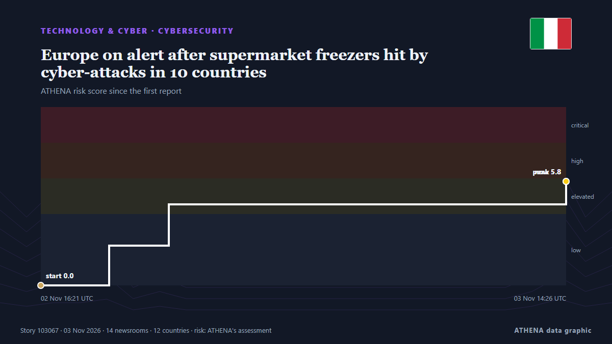

Europe on alert after supermarket freezers hit by cyber-attacks in 10 countries

Supermarkets have reported problems from Estonia and Sweden to Portugal and Italy and many retainers have been forced to discard food. из BBC News
Независимые источники: 14 изданий в 12 странах, с 2 нояб.; первым сообщил Yle News (alternative feed); освещение продолжает расти. ATHENA оценивает риск как повышенный (5.9/10), прежде всего из-за тяжести описываемого ущерба и географического и отраслевого охвата. Уверенность — 87 % (высокая); подтверждают независимые источники: 14 изданий, средняя надёжность источников — 72 %. СМИ по странам: Великобритания (4), Италия (3), Финляндия (2). Освещение: с 2 нояб. по 3 нояб., 23 ч.
Почему это важно: События в технологиях и кибербезопасности формируют безопасность, конкуренцию и правила цифровой жизни.
Что изменилось: 18 новых сообщений от 15 редакций за 24 часа до 3 нояб..
Первый заголовок: Finnish shops possibly affected by European supermarket freezer hack
Заголовки приводятся на английском языке, как они были опубликованы.
Коротко в цифрах
Отобрано, оценено и написано по опубликованной методологии ATHENA. Ни один редактор не вмешивается в отдельные события. Как это создаётся ›
| 02 Nov 14:50 UTC | 2 |
|---|---|
| 02 Nov 15:50 UTC | 1 |
| 02 Nov 16:50 UTC | 2 |
| 02 Nov 17:50 UTC | 2 |
| 02 Nov 18:50 UTC | 3 |
| 02 Nov 19:50 UTC | 0 |
| 02 Nov 20:50 UTC | 1 |
| 02 Nov 21:50 UTC | 0 |
| 02 Nov 22:50 UTC | 0 |
| 02 Nov 23:50 UTC | 0 |
| 03 Nov 00:50 UTC | 0 |
| 03 Nov 01:50 UTC | 0 |
| 03 Nov 02:50 UTC | 0 |
| 03 Nov 03:50 UTC | 0 |
| 03 Nov 04:50 UTC | 0 |
| 03 Nov 05:50 UTC | 0 |
| 03 Nov 06:50 UTC | 0 |
| 03 Nov 07:50 UTC | 0 |
| 03 Nov 08:50 UTC | 0 |
| 03 Nov 09:50 UTC | 0 |
| 03 Nov 10:50 UTC | 1 |
| 03 Nov 11:50 UTC | 3 |
| 03 Nov 12:50 UTC | 1 |
| 03 Nov 13:50 UTC | 2 |
| 02 Nov 16:21 UTC | 0.0 |
|---|---|
| 02 Nov 19:13 UTC | 2.2 |
| 02 Nov 21:44 UTC | 4.5 |
| 03 Nov 14:26 UTC | 5.8 |
| 03 Nov 14:26 UTC | 5.9 |
Откуда эти цифры
Значимость
Риск
Уверенность
Освещение — кто сообщил и когда
заголовок в оригинале · открывает источник- Yle News (alternative feed) · ФинляндияFinnish shops possibly affected by European supermarket freezer hack
- TheJournal.ie · ИрландияHow do you hack a supermarket fridge, and why would anyone want to?
- Yle News — page reader · ФинляндияFinnish shops possibly affected by European supermarket freezer hack
- MyJoyOnline · ГанаShop freezers in seven European countries hit by cyber-attack
- BBC News · Великобритания'All this food is now useless': Piles of rubbish after shop freezers hit by cyber-attack
- The Jerusalem Post · ИзраильNational Cyber Directorate issues warning to Israeli retail chains after European stores hacked
- BBC News · ВеликобританияIf hackers can take control of a supermarket freezer, how vulnerable is other tech?
- The Guardian · ВеликобританияWho is hacking Europe’s supermarket fridges and freezers, and why?
- Politico Europe · БельгияEU Commission to probe supermarket cyberattacks
- New York Times Business · Соединенные ШтатыAre Freezers Being Hacked? Europe and the U.S. Military Investigate.
- Sydney Morning Herald · АвстралияNew cyberattack on European supermarket freezers
- The Next Web · НидерландыEU Commission will review supermarket defences after fridge cyberattacks
- The Local Italy · ИталияItaly holds security talks after European freezer cyberattacks
- IOL · Южно-Африканская РеспубликаCyberattacks target European supermarkets: Hackers hijack smart freezers to spoil food supplies
- ANSA English · ИталияNo cause for alarm over cyber attacks on supermarket fridges - govt
- ANSA English · ИталияNo cause for alarm over cyber attacks on supermarket fridges - govt
- BBC News · ВеликобританияEurope on alert after supermarket freezers hit by cyber-attacks in 10 countries
- Bangkok Post — page reader · ТаиландItaly holds security talks after freezer cyberattacks